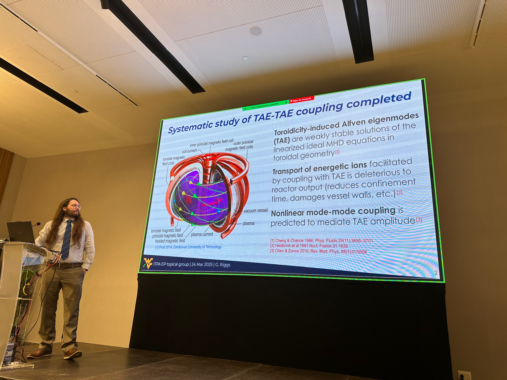

Everybody likes the Mandelbrot set, right?*
About Me
Hi there! I'm a dad, a postdoctoral fellow in plasma physics, and generally a fan of learning something new! As you're reading this, I'm probably somewhere between building LEGOs with a little dude and writing a paper, so it's likely the website is still lacking that "polished" feel.
But, broadly speaking, my work investigates energy transfer in plasmas.
During grad school, my research focused on magnetically-confined plasmas. I characterized nonlinear interactions between magnetic field instabilities and populations of energetic ions in tokamaks and stellarators. Notably, I used wavelet-based bispectral analysis to document wave-wave coupling on sub-millisecond time scales, which might enhance active feedback controls of potentially catastrophic disruptions in forthcoming fusion reactors.
Nowadays, I'm poring over mountains of spacecraft data from THEMIS and Arase to assess and model the latitudinal dependence of ultra-low frequency (ULF) wave power in the outer radiation belt. This is important because ULF waves are crucial drivers of radial diffusion in energetic electron populations, but most investigations consider only particles with nearly-perpendicular pitch angles (i.e., "trapped" at the magnetic equator).
With any luck, I'll be able to post/link/upload enough of my work so that this can function as a back-up of sorts... How does it seem like I'm doing?
Highlights
2026: Our paper for the open-source PyBic Python module was published, along with an article in Nuclear Fusion which uses PyBic to identify transient, nonlinear frequency locking between coupled toroidal Alfvén eigenmodes (TAE) in the DIII-D tokamak.
2025: I talked at the ITPEA Energetic Particle Topical Group meeting in the stunning city of Seville, Spain! Also, I presented at the GEM/CEDAR Workshop (Des Moines, IA), APS Division of Plasma Physics Conference (Long Beach, CA), and the AGU Annual Meeting (New Orleans, LA).
2024: We received a Featured Article in Physics of Plasmas and I successfully defended my dissertation!
2023: I won a student poster award at the Sherwood Fusion Theory Conference in Knoxville, TN and presented at APS DPP in Denver, CO.
I'm also deeply interested in the generating functions associated with infinite exponentials, e.g.,
$$
\Lambda(\alpha,z) \equiv
\text{\huge{$\Omega$}}_{k=0}^\infty e^{\alpha^k z}
=
e^{z e^{\alpha z e^{\alpha^2 z e^{{.^{.^.}}}}} } = \sum_{i=0}^\infty L_i(\alpha) z^i,
$$
$$
L_{i+1}(\alpha)
=
\frac{1}{i+1}\sum_{n=0}^{i} (n+1) \alpha^n L_{n}(\alpha) L_{i-n}(\alpha).
$$

Dept. of Climate & Space
Sciences & Engineering
University of Michigan
*This is taken from my Deep Dream page, the source image can be found here.
{kind=link}